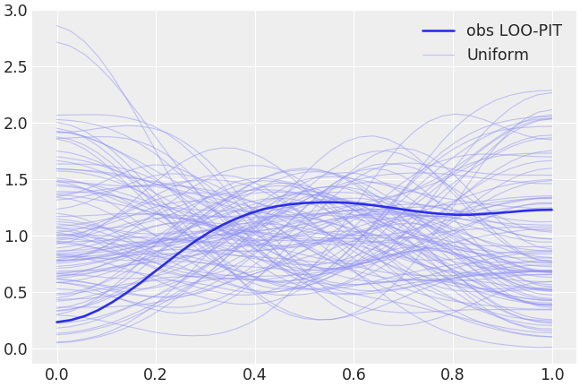
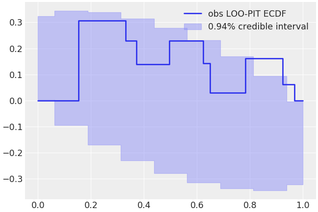

arviz.plot_loo_pit¶
-
arviz.plot_loo_pit(idata=None, y=None, y_hat=None, log_weights=None, ecdf=False, ecdf_fill=True, n_unif=100, use_hpd=False, credible_interval=0.94, figsize=None, textsize=None, color='C0', legend=True, ax=None, plot_kwargs=None, plot_unif_kwargs=None, hpd_kwargs=None, fill_kwargs=None, backend=None, backend_kwargs=None, show=None)[source]¶ Plot Leave-One-Out (LOO) probability integral transformation (PIT) predictive checks.
- Parameters
- idataInferenceData
InferenceData object.
- yarray, DataArray or str
Observed data. If str, idata must be present and contain the observed data group
- y_hatarray, DataArray or str
Posterior predictive samples for
y. It must have the same shape as y plus an extra dimension at the end of size n_samples (chains and draws stacked). If str or None, idata must contain the posterior predictive group. If None, y_hat is taken equal to y, thus, y must be str too.- log_weightsarray or DataArray
Smoothed log_weights. It must have the same shape as
y_hat- ecdfbool, optional
Plot the difference between the LOO-PIT Empirical Cumulative Distribution Function (ECDF) and the uniform CDF instead of LOO-PIT kde. In this case, instead of overlaying uniform distributions, the beta
credible_intervalinterval around the theoretical uniform CDF is shown. This approximation only holds for large S and ECDF values not vary close to 0 nor 1. For more information, see Vehtari et al. (2019), Appendix G.- ecdf_fillbool, optional
Use fill_between to mark the area inside the credible interval. Otherwise, plot the border lines.
- n_unifint, optional
Number of datasets to simulate and overlay from the uniform distribution.
- use_hpdbool, optional
Use plot_hpd to fill between hpd values instead of overlaying the uniform distributions.
- credible_intervalfloat, optional
Credible interval of the hpd or of the ECDF theoretical credible interval
- figsizefigure size tuple, optional
If None, size is (8 + numvars, 8 + numvars)
- textsize: int, optional
Text size for labels. If None it will be autoscaled based on figsize.
- colorstr or array_like, optional
Color of the LOO-PIT estimated pdf plot. If
plot_unif_kwargshas no “color” key, an slightly lighter color than this argument will be used for the uniform kde lines. This will ensure that LOO-PIT kde and uniform kde have different default colors.- legendbool, optional
Show the legend of the figure.
- ax: axes, optional
Matplotlib axes or bokeh figures.
- plot_kwargsdict, optional
Additional keywords passed to ax.plot for LOO-PIT line (kde or ECDF)
- plot_unif_kwargsdict, optional
Additional keywords passed to ax.plot for overlaid uniform distributions or for beta credible interval lines if
ecdf=True- hpd_kwargsdict, optional
Additional keywords passed to az.plot_hpd
- fill_kwargsdict, optional
Additional kwargs passed to ax.fill_between
- backend: str, optional
Select plotting backend {“matplotlib”,”bokeh”}. Default “matplotlib”.
- backend_kwargs: bool, optional
These are kwargs specific to the backend being used. For additional documentation check the plotting method of the backend.
- showbool, optional
Call backend show function.
- Returns
- axesmatplotlib axes or bokeh figures
References
Gabry et al. (2017) see https://arxiv.org/abs/1709.01449
Gelman et al. BDA (2014) Section 6.3
Examples
Plot LOO-PIT predictive checks overlaying the KDE of the LOO-PIT values to several realizations of uniform variable sampling with the same number of observations.
>>> import arviz as az >>> idata = az.load_arviz_data("centered_eight") >>> az.plot_loo_pit(idata=idata, y="obs")
Fill the area containing the 94% credible interval of the difference between uniform variables empirical CDF and the real uniform CDF. A LOO-PIT ECDF clearly outside of these theoretical boundaries indicates that the observations and the posterior predictive samples do not follow the same distribution.
>>> az.plot_loo_pit(idata=idata, y="obs", ecdf=True)
